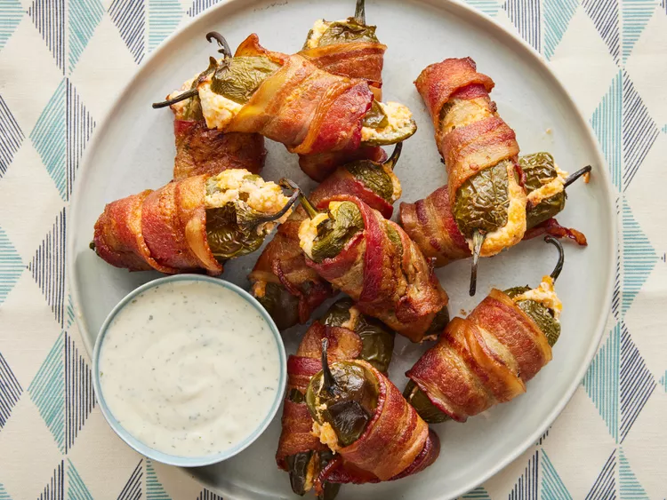

Bacon-Wrapped Jalapeño Poppers

So Good They Pop Right in Your Mouth
These jalapeño poppers are creamy in the middle with crispy bacon on the outside. They're easy to make and taste so much better than traditional poppers.
Get the party started with this 4-ingredient jalapeño popper recipe. Stuffed with a rich cream cheese-Cheddar mixture and wrapped in crispy bacon, it doesn't get much better than this top-rated appetizer!
Ingredients
These are the simple ingredients you'll need to make this bacon-wrapped jalapeño popper recipe:
- Cream cheese and cheese: The rich jalapeño popper filling is a blend of equal parts cream cheese and shredded Cheddar cheese.
- Jalapeños: We recommend wearing food-grade gloves while you remove the seeds and membranes to prevent burning your skin.
- Bacon: Of course, you'll need bacon to wrap up your cream cheese-stuffed jalapeños!
How to Make Homemade Jalapeño Poppers
Here's a brief overview of what you can expect when you make bacon-wrapped jalapeño poppers at home:
- Make the filling.
- Fill each jalapeño half with cheese mixture, then put the halves back together.
- Wrap each reassembled jalapeño with bacon.
- Cook in the preheated oven until the bacon is crispy
How Long to Cook Bacon-Wrapped Jalapeño Poppers
In an oven preheated to 400 degrees F, your jalapeño poppers should be perfectly cooked with crispy bacon in 25-35 minutes.